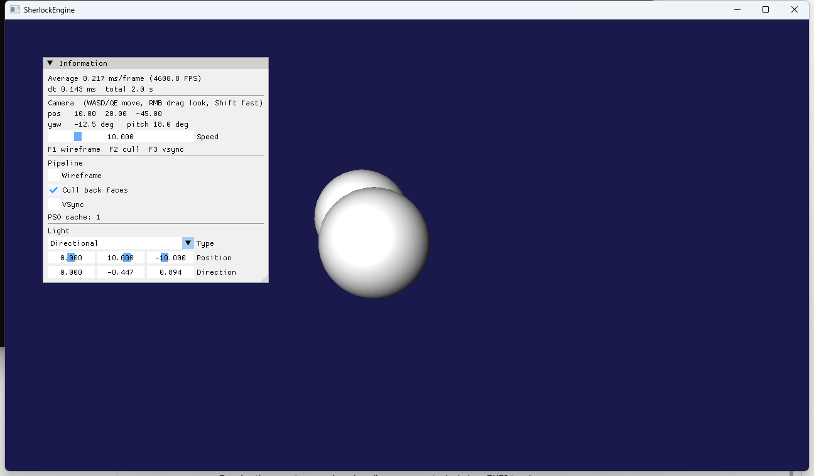
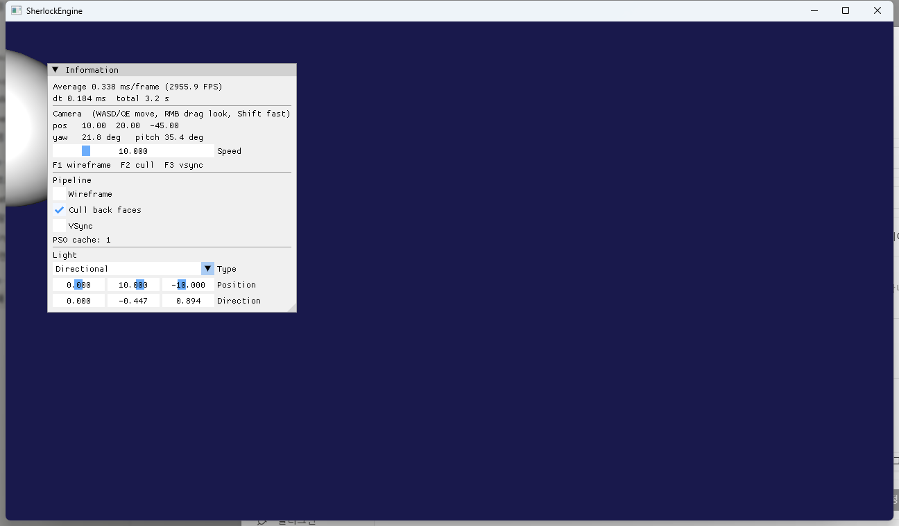

2단계 · 입력과 카메라 컨트롤러
원문은 이 단계를 "RHI와 무관하지만 이후 모든 단계의 디버깅 효율을 결정한다"고 했습니다. 카메라를 마음대로 움직일 수 없으면 깊이 버퍼가 맞는지, 그림자가 바닥에 붙는지 눈으로 확인할 수 없습니다. 이 문서는 Input 클래스의 프레임 단위 상태 모델, LookAt에서 위치+yaw/pitch로 바꾼 카메라의 수학(뷰행렬이 왜 역행렬인가, 부호는 왜 뒤집지 않아도 되는가), 그리고 마우스 룩을 구현하다 만난 Win32 캡처의 함정을 다룹니다.
Win32 메시지는 AppBase::MsgProc에서 Input에 무조건 공급되고, 게임 코드는 Update(dt) 안에서 IsKeyDown·GetMouseDeltaX 같은 질의만 합니다. 카메라는 위치와 두 각도를 저장하고 뷰행렬을 inverse(R·T)로 만들며, Debug 빌드에서는 그 결과가 XMMatrixLookToLH와 같은지 매번 단언합니다. 우클릭 드래그는 SetCapture·ShowCursor(FALSE)·매 프레임 SetCursorPos 재중앙화로 구현했는데, ImGui 백엔드가 먼저 캡처를 잡는 바람에 WM_CAPTURECHANGED가 자기 자신에게 오는 경우를 처리해야 했습니다.
1.요약
| 구성 요소 | 파일 | 역할 |
|---|---|---|
| Input | Core/Input.h/.cpp | 키 256개·마우스 버튼 3개의 현재/이전 상태, 마우스 위치·델타·휠. On*(공급), Is*Down/Pressed/Released(질의), EndFrame |
| Camera | Scene/Camera.h/.cpp | 위치 + yaw/pitch. Rotate, Move, SetLookAt(역산), GetForward/Right/Up, 뷰·투영 행렬 |
| AppBase::MsgProc | App/AppBase.cpp | 키·마우스·휠·포커스·캡처 메시지를 Input에 공급. OnFocusLost() 가상 훅 |
| AppBase::Run | App/AppBase.cpp | ImGui NewFrame을 Update 앞으로, 프레임 끝에 input.EndFrame() |
| TestApp::UpdateCamera | App/TestApp.cpp | WASD/QE 이동, 우클릭 룩(BeginLook/EndLook), 공전하는 구 |
2.입력 모델
2.1 메시지에서 프레임 상태로
Win32는 입력을 이벤트로 줍니다. WM_KEYDOWN이 한 번 오고, 키를 누르고 있으면 자동 반복으로 계속 오고, 떼면 WM_KEYUP이 옵니다. 게임 코드가 원하는 것은 상태입니다. "지금 W가 눌려 있는가"(이동), "이번 프레임에 F1이 눌렸는가"(토글). 두 표현을 잇는 것이 Input입니다.
// Core/Input.h — 상태
bool m_keys[256], m_prevKeys[256];
bool m_mouse[3], m_prevMouse[3];
int m_x, m_y, m_dx, m_dy; bool m_hasPosition; float m_wheel;
// 질의
IsKeyDown(vk) = m_keys[vk]
IsKeyPressed(vk) = m_keys[vk] && !m_prevKeys[vk]
IsKeyReleased(vk) = !m_keys[vk] && m_prevKeys[vk]
// 프레임 끝
EndFrame(): prev = cur; dx = dy = 0; wheel = 0이 모델이 성립하는 조건은 메시지가 프레임 사이에만 처리된다는 것입니다. AppBase::Run의 루프는 PeekMessage가 참인 동안 메시지를 하나씩 처리하고, 큐가 빌 때만 한 프레임을 그립니다. 즉 [메시지 전부] → [Tick, Update, Render, EndFrame] → [메시지 전부] 순서라, 한 프레임 안에서 m_keys가 바뀌는 일이 없습니다. Pressed는 "직전 프레임에는 안 눌려 있었는데 지금은 눌려 있다"로 정확히 정의됩니다. 마우스 델타는 한 프레임 동안 WM_MOUSEMOVE가 여러 번 오면 누적됩니다.
WM_MOUSEMOVE의 좌표는 LOWORD/HIWORD가 아니라 GET_X_LPARAM/GET_Y_LPARAM으로 꺼냅니다. 캡처 중에는 커서가 창 밖으로 나가 음수 좌표가 오는데, LOWORD는 부호 없는 값으로 해석해 65,000 근처의 값을 돌려줍니다. Microsoft 문서가 "다중 모니터에서 잘못된 결과"라고 경고하는 그 함정입니다[1].
2.2 공급은 무조건, 소비 측에서 판단
ImGui가 텍스트 필드에 포커스를 갖고 있을 때 W를 누르면 UI에 글자가 들어가야 하고 카메라가 움직이면 안 됩니다. Dear ImGui FAQ[2]는 이를 위해 io.WantCaptureMouse/WantCaptureKeyboard를 제공하고, 참이면 "입력을 ImGui에만 보내라"고 합니다. 여기서 선택이 갈립니다. (a) MsgProc에서 WantCapture*가 참이면 Input에 넣지 않는다. (b) 항상 넣고, Update에서 카메라 코드가 WantCapture*를 보고 무시한다.
(a)는 키 고착 버그를 만듭니다. 씬 위에서 W를 누른 채 커서를 ImGui 창으로 옮기고 거기서 W를 떼면, WM_KEYUP이 올 때 WantCaptureKeyboard가 참이라 Input은 KeyUp을 받지 못하고 W가 눌린 채로 남습니다. 카메라가 계속 전진합니다. (b)는 상태가 항상 실제 키보드와 같고, "지금 그 상태를 쓸 것인가"만 소비자가 정합니다. Input.h 주석에 이 이유를 적었습니다.
ImGui의 Win32 백엔드 ImGui_ImplWin32_WndProcHandler는 키·마우스 메시지를 기록한 뒤 0을 돌려주므로(메시지를 "먹지" 않음) 우리 switch가 그대로 이어서 Input에 넣을 수 있습니다. WM_SYSKEYDOWN(Alt 조합)은 Input에 넣은 뒤 반드시 DefWindowProc으로 넘겨야 Alt+F4가 동작합니다.
2.3 WantCaptureMouse의 타이밍
io.WantCaptureMouse는 ImGui::NewFrame() 안에서 "지금 마우스가 ImGui 창 위에 있는가"를 계산해 갱신됩니다. 이전 Run()은 Update()를 먼저 부르고 그다음 ImGui::NewFrame()을 불렀습니다. 그 순서면 Update가 읽는 값은 한 프레임 전의 값입니다. 3,000 FPS에서는 눈에 띄지 않지만, 60 FPS에서 UI 가장자리를 클릭하면 한 프레임 동안 카메라가 돌 수 있습니다. 그래서 순서를 바꿨습니다.
// App/AppBase.cpp — Run()
gameTimer.Tick(); dt = …;
ImGui_ImplDX11_NewFrame(); ImGui_ImplWin32_NewFrame(); ImGui::NewFrame(); // WantCapture* 갱신
Update(dt); // 이번 프레임 값을 읽는다
ImGui::Begin("Information"); … UpdateGUI(); … ImGui::End(); ImGui::Render();
graphicsDevice.Clear(); Render(); ImGui_ImplDX11_RenderDrawData(ImGui::GetDrawData()); graphicsDevice.Present();
input.EndFrame();그리고 룩 모드는 latch입니다. 우클릭이 눌린 순간에만 WantCaptureMouse를 묻고, 일단 시작되면 커서가 UI 패널 위를 지나가도 계속 돕니다. 드래그 중에 카메라가 갑자기 멈추는 것이 더 나쁜 경험이기 때문이고, ImGui도 "ImGui 밖에서 시작한 드래그"는 자기 것이 아니라고 봅니다(FAQ의 MouseDownOwned 설명).
3.카메라 수학
3.1 yaw/pitch에서 방향 벡터로
이 프로젝트의 관례는 행벡터, 왼손 좌표계입니다(DirectXMath 기본, Transform::GetWorldMatrix가 S·R·T 순으로 곱하는 것과 같은 관례). 회전은 XMMatrixRotationRollPitchYaw(pitch, yaw, 0)로 만듭니다. 이 함수의 인자 순서는 이름과 달리 (pitch, yaw, roll)이고, 결과는 R = RotX(pitch) · RotY(yaw)입니다. 행벡터 v · R은 먼저 X축으로 pitch만큼, 그다음 Y축으로 yaw만큼 돌립니다.
DirectXMath의 XMMatrixRotationX(a)는 행벡터 기준으로 다음과 같습니다.
RotX(a) = | 1 0 0 | RotY(b) = | cos b 0 −sin b |
| 0 cos a sin a | | 0 1 0 |
| 0 −sin a cos a | | sin b 0 cos b |카메라의 로컬 전방 (0, 0, 1)에 적용하면:
(0, 0, 1) · RotX(p) = (0, −sin p, cos p)
(0, −sin p, cos p) · RotY(y) = (cos p · sin y, −sin p, cos p · cos y) ← forward오른쪽 (1, 0, 0)은 RotX에 영향받지 않고 RotY만 적용되어 (cos y, 0, −sin y)가 되므로 항상 수평입니다. 위쪽은 (0, 1, 0) · R = (sin p · sin y, cos p, sin p · cos y)입니다. 코드는 이 식을 직접 쓰지 않고 XMVector3TransformNormal(축, R)로 계산해서, 관례가 바뀌어도 식을 다시 유도할 필요가 없게 했습니다.
3.2 뷰행렬 = 카메라 월드 변환의 역행렬
월드 행렬 W는 물체의 로컬 좌표를 월드 좌표로 보냅니다. 카메라도 씬 안의 물체 하나라고 보면, 카메라의 월드 행렬 Wcam = R · T(position)은 "카메라 로컬 → 월드"입니다. 뷰 변환은 그 반대, "월드 → 카메라 로컬"이므로 정의상 V = Wcam−1입니다. 원문 D8이 "뷰행렬은 그 역행렬로"라고 한 것이 이 뜻입니다.
이 역행렬은 닫힌 형태로 구할 수 있습니다. (R·T)−1 = T−1 · R−1이고, 회전 행렬은 직교라 R−1 = RT, 평행이동의 역은 부호 반전입니다. 그래서 V = T(−p) · RT이고, 이것이 바로 XMMatrixLookToLH(p, forward, up)가 만드는 행렬입니다(오른쪽·위·전방 벡터를 열로 쓰고 마지막 행에 −p·right, −p·up, −p·forward를 두는 형태[3]). 코드는 일부러 일반 역행렬 XMMatrixInverse를 써서 "뷰 = 월드의 역"이라는 정의를 그대로 남기고, Debug 빌드에서 두 결과를 대조합니다.
// Scene/Camera.cpp
void Camera::UpdateViewMatrix()
{
const XMMATRIX world = GetRotationMatrix() * XMMatrixTranslation(m_position.x, m_position.y, m_position.z);
const XMMATRIX view = XMMatrixInverse(nullptr, world);
#if defined(_DEBUG)
const XMMATRIX lookTo = XMMatrixLookToLH(XMLoadFloat3(&m_position), GetForward(), GetUp());
for (int row = 0; row < 4; ++row)
assert(XMVector4LessOrEqual(XMVectorAbs(view.r[row] - lookTo.r[row]), XMVectorReplicate(1e-3f)));
#endif
XMStoreFloat4x4(&m_view, view);
}이 단언은 기저 벡터의 정의(3.1절)가 회전 행렬과 어긋나는 순간 잡아냅니다. 예를 들어 GetForward()가 (0,0,−1)을 돌리도록 실수하면 LookToLH는 반대편을 보는 행렬을 만들고 첫 프레임에 멈춥니다. 검증 기간 내내 한 번도 걸리지 않았습니다.
3.3 부호 관례와 클램프
3.1의 식에서 yaw가 양수면 forward의 x가 양수, 즉 오른쪽을 봅니다. pitch가 양수면 y가 음수, 즉 아래를 봅니다. 화면 좌표는 오른쪽이 +x, 아래가 +y이므로 마우스 델타를 부호 뒤집기 없이 그대로 Rotate(dx · 감도, dy · 감도)에 넣으면 "마우스를 오른쪽으로 → 오른쪽을 본다, 아래로 → 아래를 본다"가 됩니다. 이 관례가 어긋나면 -dy 같은 보정이 코드 여기저기 붙기 시작합니다.
pitch는 ±(π/2 − 0.01)로 클램프합니다. 정확히 90°가 되면 forward가 (0, ∓1, 0)이 되어 up과 나란해지고, LookTo의 right = up × forward가 0벡터가 됩니다. 이것이 자유 시점 카메라에서 말하는 짐벌락이고, 롤이 없는 yaw/pitch 카메라에서는 pitch 클램프 한 줄로 끝납니다. yaw는 [−π, π]로 감아(wrap) 몇 시간을 돌려도 값이 커지지 않게 합니다.
3.4 LookAt의 역산
이전 카메라는 eye·lookAt 두 점을 저장했고 초기값이 (10, 20, −45) → (0, 5, 0)이었습니다. 2단계 첫 프레임이 1단계와 픽셀 단위로 같아야 회귀가 없다는 것을 확인할 수 있으므로, 같은 시점을 yaw/pitch로 역산하는 SetLookAt(eye, target)을 두었습니다. 3.1의 forward 식을 뒤집으면:
d = normalize(target − eye)
yaw = atan2(d.x, d.z) // x = cos p · sin y, z = cos p · cos y → x/z = tan y
pitch = −asin(d.y) // y = −sin p실측: d = (−10, −15, 45) / 48.5 → yaw = atan2(−0.206, 0.928) = −12.5°, pitch = −asin(−0.309) = 18.0°. 패널에 −12.5° / 18.0°로 표시되었고 화면은 1단계와 같았습니다.
3.5 쿼터니언은 왜 아닌가
원문 2단계는 "쿼터니언 또는 yaw/pitch"라고 했고 D8은 Transform의 내부 표현을 쿼터니언으로 바꾸는 방향을 권했습니다. 카메라에 yaw/pitch를 고른 이유는 세 가지입니다. (1) 1인칭 자유 시점 카메라는 정의상 롤이 없고 두 각도로 완전히 기술됩니다. 자유도가 딱 맞는 표현을 쓰면 "롤이 누적되는" 부류의 버그가 원천적으로 생기지 않습니다. 쿼터니언으로 마우스 회전을 누적하면(q = q_yaw · q · q_pitch) 부동소수점 오차로 미세한 롤이 쌓여 지평선이 기울어지고, 이를 막으려면 결국 매 프레임 yaw/pitch로 분해해 다시 조립하게 됩니다. (2) UI에 "yaw 21.8°"처럼 표시·편집하기 쉽습니다. (3) SetLookAt 역산이 두 줄입니다. 쿼터니언이 필요한 곳은 임의 축 회전이 누적되는 물체의 Transform(D8), 카메라 사이의 부드러운 보간(slerp), 비행 시뮬레이터식 6자유도 카메라입니다. 그때는 Camera에 SetOrientation(XMFLOAT4 quat)를 추가하고 yaw/pitch는 편집용 입출력으로 남기면 됩니다.
4.마우스 룩
4.1 캡처·커서·재중앙화
우클릭 드래그로 시점을 돌리려면 세 가지가 필요합니다.
- 창 밖에서도 움직임을 받기.
SetCapture(hwnd)[4]를 부르면 버튼이 눌린 동안 커서가 창을 벗어나도WM_MOUSEMOVE와WM_RBUTTONUP이 이 창으로 옵니다. 없으면 드래그 도중 커서가 창 밖으로 나가는 순간 회전이 멈추고 버튼 업도 놓칩니다. - 커서 숨기기.
ShowCursor(FALSE)[5]. 이 함수는 불리언 설정이 아니라 카운터입니다. FALSE는 1 감소, TRUE는 1 증가이고 0 이상일 때만 보입니다. FALSE를 두 번 부르면 TRUE를 두 번 불러야 돌아옵니다. 그래서BeginLook의 FALSE 한 번과EndLook의 TRUE 한 번이 정확히 짝을 이루어야 하고,EndLook은 몇 번 불려도 한 번만 실행되게(멱등) 만들었습니다. - 재중앙화. 커서를 계속 움직이면 결국 화면 가장자리에 닿아 델타가 0이 됩니다. 매 프레임
SetCursorPos(앵커)로 드래그 시작점에 되돌립니다. 그런데SetCursorPos도WM_MOUSEMOVE를 만듭니다. 그것을 델타로 세면 "앵커로 되돌아온 이동"이 반대 방향 회전이 되어 카메라가 제자리에서 떱니다.Input::SetMousePositionSilently(앵커)가 현재 위치만 앵커로 바꾸고 델타에는 반영하지 않게 해서, 그 뒤에 오는WM_MOUSEMOVE(앵커)는 델타 0이 됩니다.
// App/TestApp.cpp
void TestApp::BeginLook()
{
if (m_lookActive) return;
GetCursorPos(&m_lookAnchorScreen);
SetCapture(GetWindow()); // m_lookActive를 세우기 *전에* (4.2절)
m_lookActive = true;
ShowCursor(FALSE);
ImGui::GetIO().ConfigFlags |= ImGuiConfigFlags_NoMouseCursorChange;
}
void TestApp::EndLook()
{
if (!m_lookActive) return; // 멱등
m_lookActive = false;
ImGui::GetIO().ConfigFlags &= ~ImGuiConfigFlags_NoMouseCursorChange;
ShowCursor(TRUE);
SetCursorPos(m_lookAnchorScreen.x, m_lookAnchorScreen.y);
if (GetCapture() == GetWindow()) ReleaseCapture();
}EndLook은 세 곳에서 불립니다. 우클릭을 뗐을 때, WM_KILLFOCUS(Alt-Tab), 그리고 WM_CAPTURECHANGED(다른 창이 캡처를 가져감). 뒤의 둘은 AppBase::OnFocusLost() 가상 훅을 거칩니다. 이 훅이 없으면 드래그 중 Alt-Tab을 했을 때 커서가 숨겨진 채 남습니다.
4.2 WM_CAPTURECHANGED가 자기 자신에게 온다
첫 구현에서 우클릭 드래그가 전혀 회전하지 않았습니다. 키보드는 동작했고(W로 전진 확인), 좌클릭도 ImGui에 잘 갔습니다. 원인은 ImGui Win32 백엔드가 WM_RBUTTONDOWN에서 먼저 SetCapture를 부른다는 것이었습니다(모든 버튼 다운에서 캡처를 잡아 드래그를 추적합니다). 우리 MsgProc은 ImGui 핸들러를 먼저 부르므로, BeginLook이 SetCapture를 부르는 시점에는 이미 우리 창이 캡처를 갖고 있습니다. 그리고 Windows는 캡처 창이 바뀔 때 이전 캡처 창에 WM_CAPTURECHANGED를 동기 전송하는데, 이전 창과 새 창이 같아도 보냅니다. 문서에도 "창이 스스로 ReleaseCapture를 불러도 이 메시지를 받는다"고 적혀 있고, lParam이 "캡처를 얻는 창"입니다[6].
그 결과 BeginLook 안의 SetCapture 호출이 돌아오기도 전에 WM_CAPTURECHANGED → OnFocusLost → EndLook이 실행되어 룩이 시작 즉시 끝났습니다. 게다가 첫 구현은 m_lookActive = true를 SetCapture보다 먼저 세웠기 때문에, EndLook이 ShowCursor(TRUE)까지 부른 뒤 BeginLook이 이어서 ShowCursor(FALSE)를 불러 카운터까지 어긋났습니다. 또 Input::OnFocusLost()가 마우스 버튼 상태를 지워 IsMouseReleased도 오지 않았습니다.
해결은 두 겹입니다.
// App/AppBase.cpp — MsgProc
case WM_CAPTURECHANGED:
// lParam은 캡처를 새로 얻은 창. 자기 자신이면 상실이 아니다.
if (reinterpret_cast<HWND>(lParam) != hwnd)
{
input.OnCaptureLost(); // 마우스 버튼·델타만 초기화. 키보드는 건드리지 않는다
OnFocusLost();
}
break;그리고 BeginLook은 SetCapture를 m_lookActive = true보다 먼저 불러, 혹시 메시지가 오더라도 EndLook이 아무것도 하지 않게 했습니다. OnCaptureLost가 키보드를 지우지 않는 이유는 ImGui가 버튼 업마다 ReleaseCapture를 부르기 때문입니다(lParam = NULL). 키보드까지 지우면 좌클릭 한 번에 W가 풀려 "클릭할 때마다 이동이 끊기는" 증상이 납니다. WM_KILLFOCUS에서는 전부 지웁니다. Alt-Tab 중에 뗀 키는 WM_KEYUP이 오지 않으니까요.
4.3 Raw Input이라는 대안
마우스 룩의 "정석"은 WM_INPUT(Raw Input)[7]입니다. 커서 위치가 아니라 마우스 장치의 상대 이동을 그대로 받으므로 재중앙화가 필요 없고, Windows의 포인터 가속("포인터 정확도 향상")이 적용되지 않으며, 1000Hz 마우스의 이벤트를 버퍼로 한 번에 읽을 수 있습니다. 지금 방식은 WM_MOUSEMOVE를 쓰므로 포인터 가속이 섞입니다. 검증(6절)에서 드래그 200픽셀이 이론값 28.6°가 아니라 34.3°가 된 것이 그 증거입니다. 디버그 카메라에는 문제가 아니지만 게임의 조준 카메라라면 Raw Input으로 바꿔야 합니다. Input::OnMouseMove 대신 OnMouseRaw(dx, dy)를 추가하고 RegisterRawInputDevices로 마우스를 등록하면 나머지는 그대로입니다.
5.컨트롤러
// App/TestApp.cpp — UpdateCamera(dt)
const ImGuiIO& io = ImGui::GetIO();
if (!m_lookActive && input.IsMousePressed(MouseButton::Right) && !io.WantCaptureMouse) BeginLook();
if ( m_lookActive && input.IsMouseReleased(MouseButton::Right)) EndLook();
if (m_lookActive)
{
const int dx = input.GetMouseDeltaX(), dy = input.GetMouseDeltaY();
if (dx || dy) camera.Rotate(dx * m_lookSensitivity, dy * m_lookSensitivity); // 0.0025 rad/px
SetCursorPos(m_lookAnchorScreen.x, m_lookAnchorScreen.y);
POINT client = m_lookAnchorScreen; ScreenToClient(GetWindow(), &client);
input.SetMousePositionSilently(client.x, client.y);
}
if (!io.WantCaptureKeyboard)
{
float speed = m_moveSpeed * dt; // 10 단위/초
if (input.IsKeyDown(VK_SHIFT)) speed *= 4.0f;
float forward = 0, right = 0, up = 0;
if (input.IsKeyDown('W')) forward += speed; if (input.IsKeyDown('S')) forward -= speed;
if (input.IsKeyDown('D')) right += speed; if (input.IsKeyDown('A')) right -= speed;
if (input.IsKeyDown('E')) up += speed; if (input.IsKeyDown('Q')) up -= speed;
if (forward || right || up) camera.Move(forward, right, up);
}Camera::Move는 전방을 pitch가 포함된 3D 벡터로 씁니다(비행 카메라). 위를 보고 W를 누르면 떠오릅니다. FPS식으로 수평 이동만 원하면 forward의 y를 0으로 만들고 정규화하면 됩니다. 상하(E/Q)는 카메라의 up이 아니라 월드 +Y입니다. 아래를 보고 있어도 E는 항상 위로 갑니다. 이것도 자유 시점 카메라의 관례입니다.
dt 검증을 위해 두 번째 구를 첫 구 주위로 공전시켰습니다. 각속도 1 rad/s이므로 VSync를 켜든(60 FPS) 끄든(3,000 FPS) 한 바퀴에 6.28초가 걸려야 합니다. 원문이 제안한 "회전하는 구"는 균일한 흰 구를 자전시키는 것이라 회전이 화면에 드러나지 않아 공전으로 바꿨습니다. 렌더 토글 F1(와이어프레임)·F2(컬링)·F3(VSync)도 이때 넣었습니다. 1단계에서 ImGui 체크박스 좌표로 자동 검증하다 ini 문제를 겪었기 때문입니다.
6.검증
- 완료 기준 "회전하는 구 주위를 카메라로 자유롭게 돌면서 볼 수 있다" — 충족. 아래 수치는 키·마우스 이벤트를 프로그램으로 주입해(
keybd_event/mouse_event) 창을 캡처한 결과입니다. - 기본 시점: pos (10, 20, −45), yaw −12.5°, pitch 18.0°. 3.4절의 역산과 일치하고 1단계와 같은 화면.
- W 0.8초: pos (8.34, 17.51, −37.53). forward = (−0.206, −0.309, 0.929) × 8 ≈ (−1.65, −2.47, +7.43)와 일치. 속도 10/s × 0.8s = 8 단위.
- 우클릭 드래그 (+200, +100): yaw −12.5° → 21.8°, pitch 18.0° → 35.4°. 오른쪽으로 끌면 오른쪽을, 아래로 끌면 아래를 봄. 이론값(28.6°, 14.3°)보다 큰 것은 포인터 가속(4.3절).
- F1, F2: PSO #1(wire, cull), #2(wire, none) 생성 로그. 키 →
Input→RenderSettings→ PSO 캐시 경로 확인. - Debug 빌드의
inverse(R·T) == LookToLH단언은 모든 실행에서 통과. - 커서 복구(
ShowCursor짝)는 화면 캡처에 커서가 찍히지 않아 육안 검증 대신 코드 리뷰로 확인했습니다: FALSE는BeginLook에서만 1회, TRUE는EndLook에서만 1회,EndLook은 멱등.


7.참고 문헌
- Microsoft Learn, WM_MOUSEMOVE message —
LOWORD/HIWORD대신GET_X_LPARAM/GET_Y_LPARAM을 써야 하는 이유. learn.microsoft.com/…/wm-mousemove - Dear ImGui FAQ, Q: How can I tell whether to dispatch mouse/keyboard to Dear ImGui or my application? github.com/ocornut/imgui/blob/master/docs/FAQ.md
- Microsoft Learn, XMMatrixLookToLH function. learn.microsoft.com/…/nf-directxmath-xmmatrixlooktolh
- Microsoft Learn, SetCapture function — 포그라운드 창만 캡처 가능, 캡처 중 키보드 가속기 비활성. learn.microsoft.com/…/nf-winuser-setcapture
- Microsoft Learn, ShowCursor function — 표시 카운터. learn.microsoft.com/…/nf-winuser-showcursor
- Microsoft Learn, WM_CAPTURECHANGED message —
lParam= 캡처를 얻는 창, 스스로 해제해도 받음. learn.microsoft.com/…/wm-capturechanged - Microsoft Learn, Raw Input Overview —
WM_INPUT, 등록, 표준/버퍼 읽기. learn.microsoft.com/…/about-raw-input - LearnOpenGL, Camera — yaw/pitch → 방향 벡터 유도. 오른손 좌표계(−Z 전방)라 이 프로젝트와 z 부호가 반대입니다. 식의 구조만 참고할 것. learnopengl.com/Getting-started/Camera
- Frank Luna, Introduction to 3D Game Programming with DirectX 11, 15장 "First Person Camera" — 오른쪽·위·전방 벡터를 직접 저장하고 매 프레임 재직교화하는 다른 접근. d3dcoder.net/d3d11.htm
- Glenn Fiedler, Fix Your Timestep! — dt 기반 이동의 전제. gafferongames.com/post/fix_your_timestep